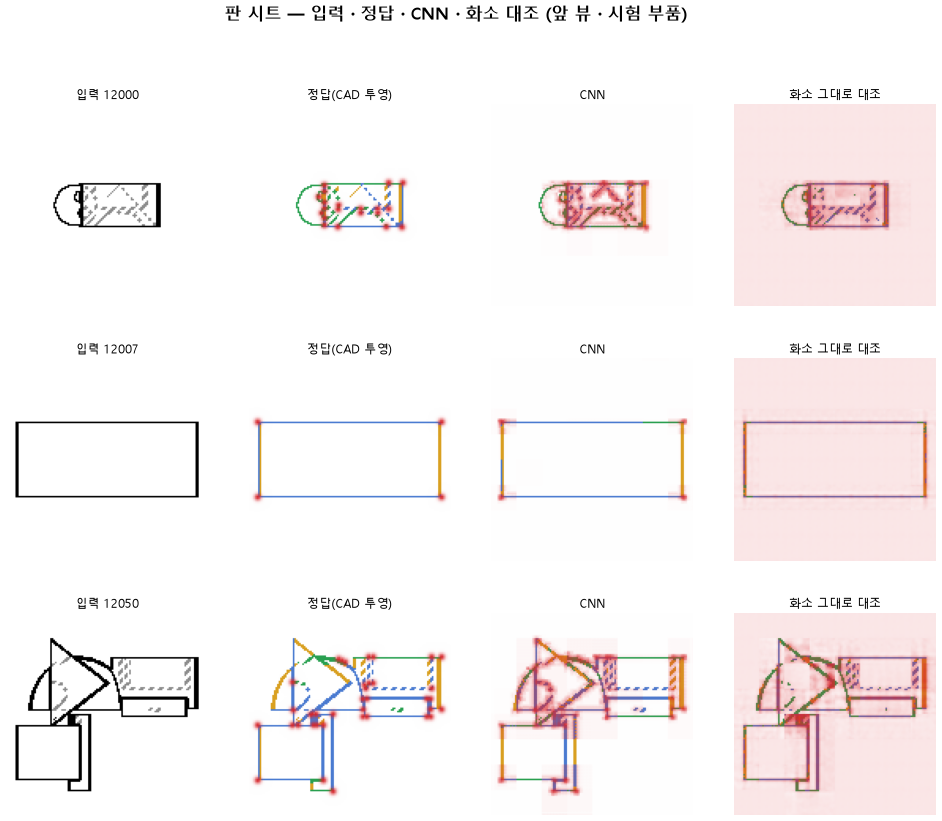

한 줄로
도면의 선을 「어디 있나」와 「무슨 선인가」로 나눠 보니, 어디는 거의 완벽해졌고 무슨 선인지는 아직 넷에 하나꼴로 틀린다.
이 판에서 확인하려던 것
우리 모델은 부품 도면을 보고 CAD 설계를 짠다. 그 첫 단계는 CNN, 그러니까 그림에서 특징을 뽑아내는 부분이다. 요즘은 이 CNN만 떼어 내서 「도면의 선을 제대로 읽나」를 따로 시험하고 있다.
바로 앞 판(135)에서 CNN의 층마다 따로 읽어 봤더니 역할이 갈려 있었다. 앞쪽 층은 선이 어디 있는지를 잘 알았고, 뒤쪽 층은 그 선이 무엇인지(직선, 곡선, 꼭짓점)를 잘 알았다. 그런데 지금까지는 맨 뒤 층만 읽고 있었다.
그래서 이번 판의 물음은 이렇다. 앞 층과 뒤 층을 같이 읽으면 둘 다 잡힐까?
어떻게 했나
- 입력: 부품 하나를 위·앞·옆에서 그린 도면 세 장(128×128 화소).
- 정답: 같은 부품의 CAD 형상에서 모서리를 계산해서, 화소마다 「직선 · 곡선 · 곡면 테두리 · 없음」과 꼭짓점 자리를 찍은 지도. 사람이 칠한 게 아니라 계산으로 나온다.
- 바꾼 것 하나: 맨 뒤 층만 읽던 것을, 맨 앞 층과 맨 뒤 층을 이어 붙여 읽게 했다.
- 나머지는 135와 같다. 학습 60 바퀴, 학습 부품 3,000개, 시험 부품 299개다.
결과

| 135 (맨 뒤 층만) | 136 (앞 + 뒤) | |
|---|---|---|
| 선이 있는 자리를 찾음 | 0.89 | 0.999 |
| 선 없는 곳에 잘못 그림 | 3.5 % | 0.01 % |
| 곡선을 곡선으로 | 0.63 | 0.82 |
| 선 종류 전체 | 0.72 | 0.74 |
| 꼭짓점 (F1) | 0.48 | 0.45 |
선 자리는 사실상 다 맞는다. 위 그림 가운데 줄의 사각형을 보면 선이 입력 위에 가늘게 정확히 그려진다. 곡선도 크게 올랐다. 반면 선 종류 전체는 거의 그대로고, 꼭짓점은 오히려 조금 떨어졌다.
미리 정해 둔 기준 8개 가운데 4개를 넘겨서, 판정은 실패다.
왜 이렇게 나왔나
- 자리가 좋아진 건 앞 층 덕이다. 앞 층은 그림을 반만 줄인 상태라, 선이 어느 화소를 지나는지 그대로 들고 있다. 맨 뒤 층은 16분의 1로 줄인 상태라 「대략 이 근처」만 안다.
- 종류가 덜 오른 건 종류를 판단하는 부분이 그대로이기 때문이라고 본다. 종류 정보는 원래 뒤 층에서 나오는데, 이번에 거기는 바꾸지 않았다.
- 가장 많이 틀리는 건 직선을 곡선으로 읽는 경우다. 정답이 직선인 화소의 23 %가 곡선으로 나왔다. 처음에는 곡면 테두리와 헷갈리는 줄 알았는데, 세어 보니 그쪽은 8 %뿐이었다. 원인은 아직 확인하지 않았다. 짧은 직선 조각, 원 바로 옆의 직선, 점선(숨은선)이 후보다.
- 꼭짓점은 귀퉁이 둘레에 번지게 찍힌다. 정확한 자리는 앞 층이 알지만, 꼭짓점인지 아닌지는 뒤 층이 판단한다. 그래서 점 하나를 정확히 집지 못하는 것으로 보인다. 이것도 확인 전이다.
- 곡면 테두리(원통 옆면처럼 모서리가 아니라 둥근 면이 꺾여 보이는 선)는 판정에서 뺐다. 도면 한 장만 보고는 사람도 상자 모서리인지 원통 옆인지 알 수 없다. 다른 방향 도면을 봐야 안다.
배운 것
- CNN은 도면 선을 못 읽는 게 아니었다. 우리가 맨 뒤 층만 넘기면서 위치를 버리고 있었다.
- 지금 본 CAD 모델(127)도 맨 뒤 층(8×8 칸)만 다음 단계로 넘긴다. 같은 이유로 선 위치를 잃고 있을 가능성이 크다.
다음
- 직선을 곡선으로 읽은 자리를 그림으로 모아서 원인을 찾는다.
- 꼭짓점은 앞 층에서 바로 찍게 해 본다.
- 앞 + 뒤를 합친 CNN을 본 CAD 모델에 넣는다.